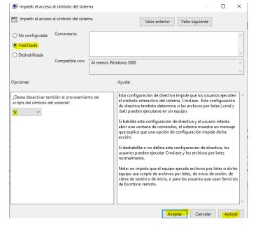

Directivas de seguridad local
Realiza las siguientes configuraciones de seguridad en a las directivas de contraseñas:
1.- Habilita los requisitos de contraseña compleja.
2.- Exige el historial de contraseñas (que recuerde las últimas 5 contraseñas)
3.- Establece la longitud mínima de las contraseñas a 8 caracteres.
4.- Establece una vigencia máxima de 30 días para las contraseñas.
5.- Establece como vigencia mínima de la contraseña 2 días. Explica en el documento que entregues, qué implica esta vigencia mínima.
6.- En las directivas de bloqueo de cuenta, establece que se permitan hasta 3 equivocaciones de un usuario al iniciar sesión, y que en el caso de producirse la cuenta del usuario quede bloqueada durante 10 minutos.
En primer lugar, tenemos que ir al Editor de directivas de grupo local. Para ello basta con pulsar la combinación de teclas Windows+R y ejecutar gpedit.msc.

Cuando nos encontremos dentro hay que ir a Configuración del equipo, Configuración de Windows, Configuración de seguridad y Directivas de cuenta. Tenemos que abrir esta carpeta y nos aparecerán otras. La que nos interesa es la de Directiva de contraseñas


1.- Habilita los requisitos de contraseña compleja.
En primer lugar, debemos activar la característica “La contraseña debe cumplir los requisitos de complejidad”. De forma predeterminada vendrá deshabilitada. Básicamente es lo que va a permitir que la nueva contraseña que creemos, o al cambiar una clave ya existente, cumpla con los requisitos como la longitud o el uso de letras mayúsculas y minúsculas, números y otros caracteres.

Estos últimos parámetros que mencionamos es lo que va a otorgar realmente complejidad a una clave de acceso. No debemos crear una que solo tenga letras o incluso letras y números; lo ideal es que también cuente con algún símbolo adicional, como por ejemplo “%”, “&”, “$”…
2.- Exige el historial de contraseñas (que recuerde las últimas 5 contraseñas)
Esto es interesante para asegurarnos de crear contraseñas únicas y que no se repitan.
Al exigir historial de contraseñas, Windows no nos va a dejar poner una clave que ya pusimos anteriormente. De forma predeterminada no guardará las contraseñas, pero podemos ponerle un número para que sí lo haga.
Para ello, hacemos click sobre Exigir historial de contraseñas

Por ejemplo “5” y que recuerde las últimas 5 claves que hemos puesto.
Aplicamos los cambios y Guardamos

3.- Establece la longitud mínima de las contraseñas a 8 caracteres.
Simplemente con añadir una letra, un número o un símbolo más a una clave, vamos a lograr que sea mucho más segura. Por tanto, la cantidad que pongamos va a ser esencial.
Cuando activamos los requisitos de complejidad, automáticamente la longitud mínima de esa contraseña pasa a ser de 6. No podríamos, por ejemplo, crear una contraseña que tuviera solo 5 caracteres. En ese caso se consideraría insegura y no nos dejaría.
Ahora bien, 6 sigue siendo una cifra muy baja. Lo ideal es que tenga al menos 10-12 caracteres. Podemos configurarlo de esta forma y que nos exija contraseñas que sean más largas y podamos estar más seguros.
Para ello hacemos click en Longitud mínima de la contraseña.

Introducimos que la longitud mínima sea de 8 caracteres.
Aplicamos los cambios y guardamos.

4.- Establece una vigencia máxima de 30 días para las contraseñas.
Asignar una vigencia máxima significa que vamos a tener que cambiar la clave antes de esa fecha. Por ejemplo, si ponemos 30 días o si dejamos los 42 días que vienen predeterminados, una vez pase ese tiempo Windows nos exigirá poner otra contraseña y evitaremos estar usando siempre la misma.
Para ello hacemos click en Vigencia máxima de la contraseña.

Introducimos que sea 30 días de vigencia máxima.
Aplicamos los cambios y guardamos.

5.- Establece como vigencia mínima de la contraseña 2 días. Explica en el documento que entregues, qué implica esta vigencia mínima.
En el caso de la vigencia mínima, esto significa que es el tiempo mínimo que va a estar vigente una clave que hemos creado. De esta forma evitaremos cambiar de contraseña antes de esa fecha. No obstante, esto lo ideal es mantenerlo a 0 y que nos permita cambiarla tantas veces como queramos, ya que no es un problema
Para ello hacemos click en Vigencia mínima de la contraseña.

Introducimos que sea 2 días de vigencia mínima.
Aplicamos los cambios y guardamos.

6.- En las directivas de bloqueo de cuenta, establece que se permitan hasta 3 equivocaciones de un usuario al iniciar sesión, y que en el caso de producirse la cuenta del usuario quede bloqueada durante 10 minutos.
Para ello nos dirigiremos al apartado de Directiva de bloqueo de cuenta, y primero haremos click en Umbral de bloqueo de cuenta para asignarle 3 equivocaciones al usuario.


Ahora le damos a Duración del bloqueo de cuenta para asignarle que que en el caso de producirse la cuenta del usuario quede bloqueada durante 10 minutos


5.- Directivas de grupo local.
Impediremos el acceso de los usuarios al símbolo del sistema editando las directivas de grupo.
Para evitar el acceso al Símbolo del sistema en Windows, utilizamos la configuración de la directiva de grupo o editar el Registro de Windows para desactivar el Símbolo del sistema. Al hacer esto, evitará que los usuarios ejecuten la línea de comandos interactiva o CMD.exe.
Para ello nos vamos al Editor de directivas de grupo local como en el anterior ejercicio, y ahora de Configuración de usuario, Plantillas administrativas, Sistema podemos observar que hay una opción llamada Impedir el acceso al símbolo del sistema, hacemos click

Habilitamos y le decimos que Si al procesamiento de scripts del cmd.
Aplicamos los cambios y aceptamos